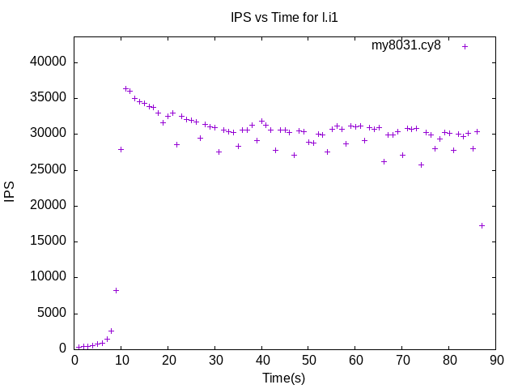
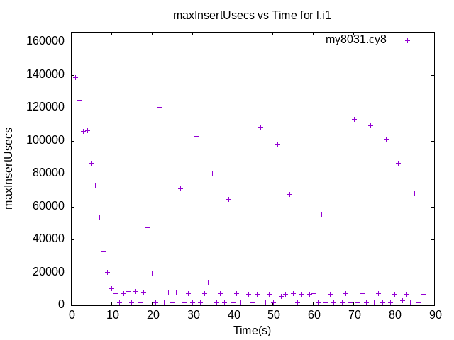
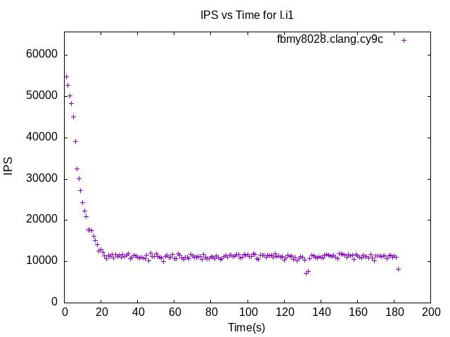
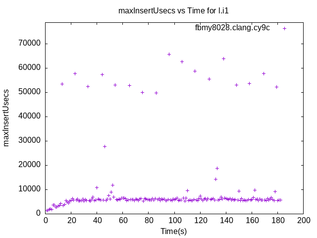
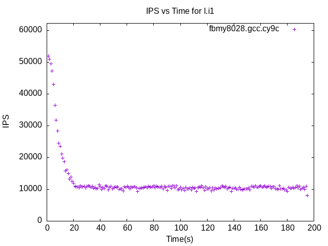
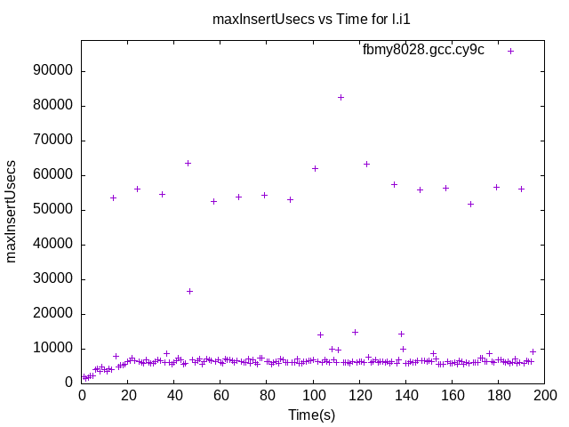
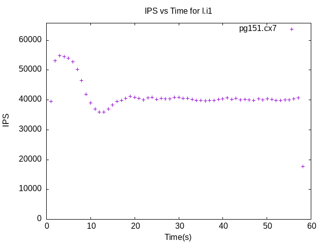
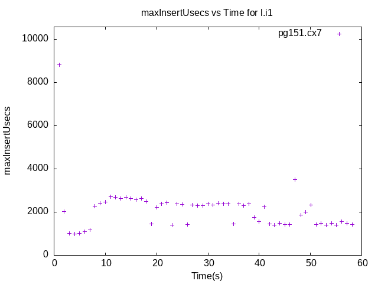

These have results per 1-second interval for: insert rate (IPS) and max insert reponse time.
The results are from 1 client while the test may have N clients where N > 1.
Contents
my8031.cy8: IPS
my8031.cy8
my8031.cy8: max insert response time
my8031.cy8
fbmy8028.clang.cy9c: IPS
fbmy8028.clang.cy9c
fbmy8028.clang.cy9c: max insert response time
fbmy8028.clang.cy9c
fbmy8028.gcc.cy9c: IPS
fbmy8028.gcc.cy9c
fbmy8028.gcc.cy9c: max insert response time
fbmy8028.gcc.cy9c
pg151.cx7: IPS
pg151.cx7
pg151.cx7: max insert response time
pg151.cx7